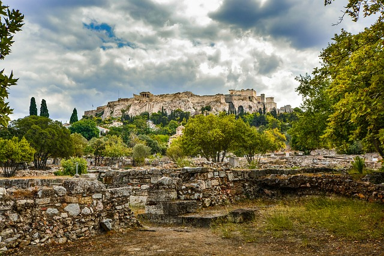
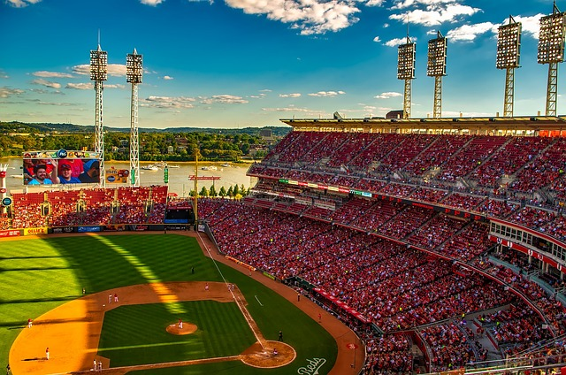

On this page I have showcased pictures of some of my favorite things. These pictures include a couple that I took, and ones that I took of the internet. There are cool pictures of nature. Followed by pictures of Ancient Greece, these were from the internet. There are pictures of the best animals out there. Of course, I had to include my doggy, Ginger. Lastly, I showcase some of the coolest American Sport Stadiums across the country. The stadiums mostly focus on baseball stadiums with some college football ones being shown. I hope that you see what I see in all of these topics when you go through this page.



| Topic | Favorite Kind | Why |
|---|---|---|
| Nature | Ocean | Peaceful |
| Greece | Mythology | Books I read when I was a kid |
| Dogs | Carolina Dog | That's the breed of my dog |
| Stadiums | Baseball | My favorite sport |